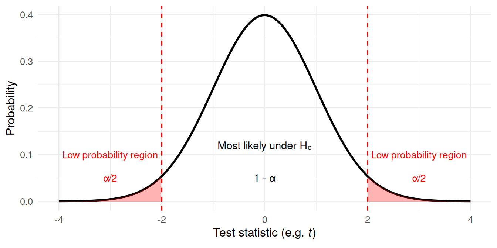
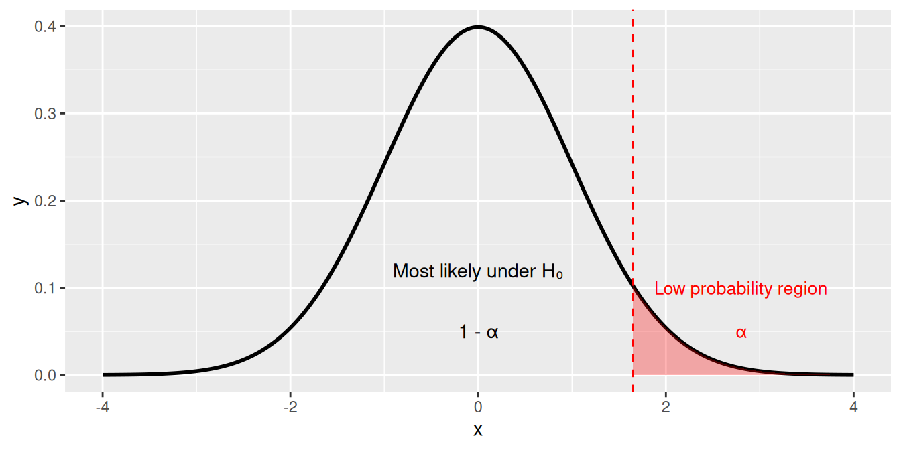

We use hypothesis testing to assess whether the pattern we see in our data is unlikely to have arisen by random chance alone.
For example:
Do males and females of a given species differ in body mass?
Does an antibiotic reduce bacterial growth compared with a control?
Because biological data are variable, we can’t trust a single mean difference — we need a framework to decide when an effect is convincing.
The idea of a null hypothesis
The null hypothesis (H₀) represents the idea of no real effect.
It represents what we’d expect if any difference is just due to random noise.
We compare it with the alternative hypothesis (H₁), which suggests a real effect exists.
If our question is something like, “Does body mass differ between and females?” our null and alternative hypotheses would be:
H₀: Mean body mass is the same for both sexes.
H₁: Mean body mass differs between sexes.
This is known as a “two-tailed hypothesis test”: we are interested in whether our data differ than we expected under the null hypothesis, i.e. is either larger or smaller (we don’t care which).
The idea of a null hypothesis
The null hypothesis (H₀) represents the idea of no real effect.
Our question could also be “Is the flipper length of males larger than females?”
H₀: Male mean flipper length is equal to or less than female mean flipper length.
H₁: Male mean flipper length is larger than female flipper length.
Or, “Is the bill length of Gentoo penguins shorter than of Chinstrap penguins?”
H₀: Mean bill length for Gentoo penguins is equal to or longer than for Chinstrap penguins.
H₁: Mean bill length for Gentoo penguins is shorter than for Chinstrap penguins.
These are both examples of “one-tailed hypothesis tests”: we are interested in testing whether are data are either larger, or smaller, than expected under the null hypothesis–and the direction of the difference matters.
The test statistic
To answer that question, we calculate a test statistic — a number that captures how different our observed data are from what we’d expect under H₀.
Different tests use different statistics:
Test
Typical data type
Statistic
t-test
Comparing means
t-value
χ² test
Counts/frequencies
χ² value
correlation
Relationship between variables
r
Large values of the statistic usually mean the data deviate strongly from H₀.
The p-value
The p-value is the probability of seeing a result as extreme as ours if the null hypothesis were true.
A small p-value means our data are unlikely under H₀.
A large p-value means the data are compatible with H₀.
Conventionally, we use a threshold (α), often 0.05:
If p < 0.05: we reject H₀ (evidence for an effect).
If p ≥ 0.05: we fail to reject H₀ (no evidence of an effect).
Note: we never “accept” or “prove” H₀ — we only fail to reject it.
Visualisng p-values: two-tailed hypotheses
Imagine the distribution of outcomes expected under H₀.
Most outcomes cluster near the centre (small differences), but extreme outcomes are rare.

If our test statistic falls in the red region (p < 0.05), we reject H₀.
Visualising p-values: one-tailed hypotheses
When our alternative hypothesis predicts a specific direction of effect, we only consider one tail of the distribution.
NULL

If our test statistic falls in the red region (p < 0.05), we reject H₀ in favour of the directional alternative.
Example: Antibiotic test
Suppose we grow bacteria with and without an antibiotic:
Treatment
Mean OD600
SD
n
Control
0.80
0.05
5
Antibiotic
0.62
0.06
5
We perform a t-test and get p = 0.01.
Interpretation:
If there were no real difference in growth, data like this would occur only about 1% of the time.
Therefore, we reject H₀ — the antibiotic likely reduces growth.
Type I and Type II errors
Statistical testing involves probabilities — so mistakes can happen.
Error type
What happens
Probability
Type I
Reject H₀ when it’s actually true (false positive)
α (e.g. 0.05)
Type II
Fail to reject H₀ when it’s actually false (false negative)
β
Reducing α makes Type I errors rarer, but increases Type II errors.
We can reduce both by collecting larger samples (increasing power).
Statistical power
Power = probability of correctly rejecting a false null hypothesis (1 − β).
Power increases with:
Larger sample size
Larger true effect size
Lower variability
Higher α (though that increases false positives)
Power analysis helps plan experiments that are sensitive enough to detect real effects.
Statistical vs biological significance
Even a very small difference can be “statistically significant” if n is large.
But that doesn’t mean it’s biologically meaningful.
Example:
0.2 g difference in penguin body mass might be statistically significant but trivial biologically.
Always interpret results in context: does the difference matter biologically, or just statistically?
Common misunderstandings
A p-value does not tell us the probability that H₀ is true.
Non-significant results don’t prove there is “no effect.”
Statistical significance ≠ importance.
Multiple testing inflates false positives — corrections are needed.
Reporting results
Always report:
The test used (e.g. Welch’s t-test)
The test statistic (t, F, χ², etc.)
Degrees of freedom and p-value
Optionally, effect size and confidence interval
Example:
Welch’s t-test: t(8) = 3.12, p = 0.014; mean difference = 0.18 ± 0.06 (95% CI).
Recap & next steps
Hypothesis testing compares observed data with what we’d expect under no effect.
The p-value measures how extreme our data are under H₀.
We make decisions using a threshold (α), but always with caution.
Interpretation requires both statistical reasoning and biological insight.
In the next practical session, you’ll learn how to apply t-tests in R, interpret p-values and confidence intervals, and practice describing results clearly in text.